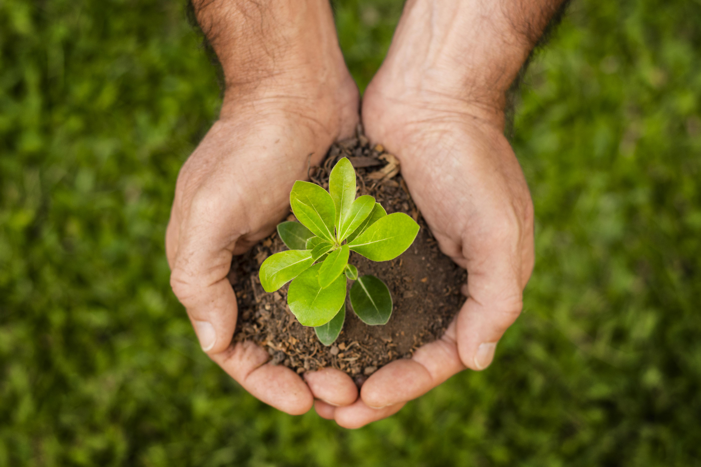

Ayudamos a restaurar el equilibrio ecológico a través de la plantación de árboles en áreas necesitadas. Con tu apoyo podemos hacer una diferencia.
Haz tu contribución hoy y ayúdanos a crear un futuro más verde.
Donar AhoraReforestación Verde es una organización sin fines de lucro comprometida con la restauración de ecosistemas a través de la plantación masiva de árboles y la conservación del medio ambiente.
Nos enfocamos en reforestar áreas de alta deforestación en todo el mundo, con un enfoque especial en la Amazonía. Cada árbol plantado es un paso hacia la restauración de nuestro planeta.

Trabajamos directamente con las comunidades locales para crear empleo sostenible mediante proyectos de reforestación y conservación, mejorando tanto el medio ambiente como la calidad de vida de las personas.
Además de plantar árboles, nos dedicamos a proteger los ecosistemas naturales, apoyando la biodiversidad y asegurando un futuro sostenible para las generaciones venideras.
Puedes donar fácilmente a través de nuestra plataforma en línea utilizando métodos como tarjeta de crédito, PayPal o transferencia bancaria. Solo debes seleccionar el monto que deseas donar y elegir tu método de pago preferido. ¡Gracias por tu apoyo!
Los árboles son plantados en áreas de alta deforestación, principalmente en selvas tropicales y bosques secos en diferentes regiones del mundo. Nos enfocamos en restaurar zonas que han sido gravemente afectadas por la deforestación, como la Amazonía, África central y el sudeste asiático.
Nos aseguramos de que cada donación se utilice de manera eficiente. Proporcionamos actualizaciones periódicas sobre el progreso de nuestros proyectos, y puedes ver fotos y videos de las áreas reforestadas. También contamos con auditorías externas que verifican el uso adecuado de los fondos.
Plantar árboles en el Amazonas es fundamental para combatir el cambio climático, mejorar la calidad del aire y conservar la biodiversidad. Los árboles ayudan a capturar el dióxido de carbono, reducir la erosión del suelo y proteger la fauna local. Además, juegan un papel crucial en la regulación del ciclo del agua y la creación de microclimas.
Elige una cantidad para donar y contribuye a un futuro más verde.
Donar Ahora